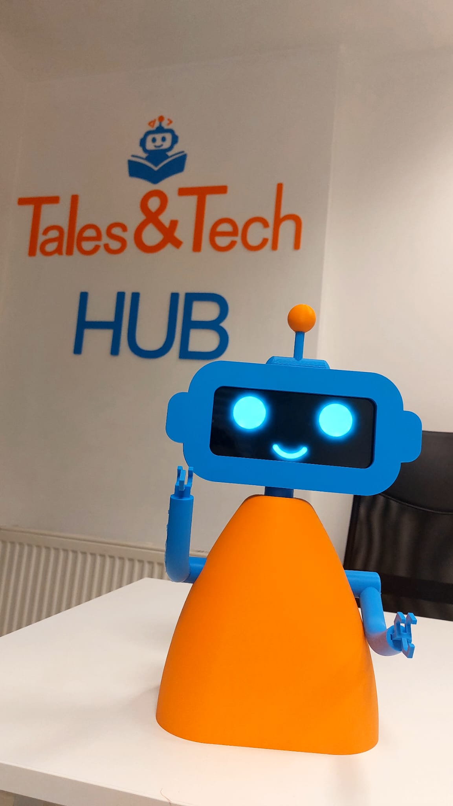
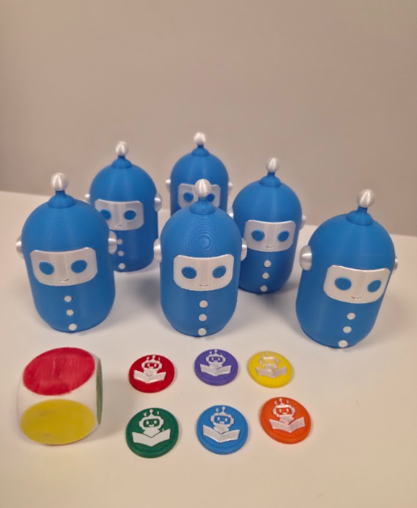

Technical education
I guide children through programming, robotics and technology using hands-on activities that turn abstract concepts into something they can build, test and understand.
At Tales & Tech HUB, my work combines technical education with hands-on product building — robotics, programming, electronics, 3D design and original learning tools created from scratch.
CURRENT WORK Tales & Tech HUB Technical education · robotics · product building ↗
I guide children through programming, robotics and technology using hands-on activities that turn abstract concepts into something they can build, test and understand.
I develop original learning objects and prototypes from scratch, shaping the concept, physical form and technical behavior around the educational goal.
I work with Arduino-based systems, sensors, motors, drivers and physical control logic, then turn those systems into workshop-ready builds.
I model parts and complete educational objects, iterate them for real use and prepare them for 3D printing and assembly.
These are some of the projects I designed and built as part of my work — not stock workshop examples, but original physical learning tools and prototypes.

A compact educational robotics platform built around Arduino, motor driving, sensors and a custom physical structure. Designed for hands-on learning around movement, wiring and control.

Workshop systems that connect construction, movement and software, giving students immediate physical feedback from what they program.
An original physical character developed to make technology feel approachable and memorable, combining visual identity with 3D fabrication.

A complete educational model created from scratch to explain sorting, recycling and material transformation through a tangible sequence.

A physical memory game designed around color recognition, matching and playful interaction, with custom 3D-printed components.
A good hands-on activity needs more than a lesson plan. The object has to be understandable, buildable, reliable enough to use, and interesting enough to make someone want to explore it.
Define the learning goal and the interaction.
Model, wire, code and build a first working version.
Use the build, find friction and simplify what does not work.
Turn the finished system into an experience someone else can understand.
Working with children forces technical ideas to become clear. If a system cannot be explained, tested and used, the problem is rarely solved.
That experience strengthened the same skills I use in software: breaking complex systems into smaller parts, debugging real behavior, adapting quickly and keeping the user at the center of the product.
WORK + PERSONAL PROJECTS